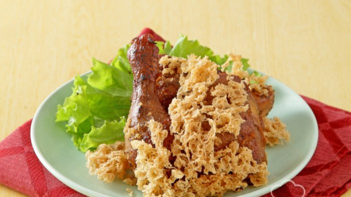

Selamat Datang di Resep Ibu
Selamat datang di Resep Ibu, tempat terbaik untuk menemukan berbagai resep masakan yang lezat dan mudah dibuat
di rumah.
Anda akan menemukan inspirasi
dan panduan lengkap untuk membuat hidangan yang sempurna.
Lihat Resep Favorit
Resep Terbaru
Resep Ayam Goreng Kremes

Bahan-bahan:
- 1 ekor ayam, potong sesuai selera
- 4 siung bawang putih
- 1 sdt ketumbar
- 2 lembar daun salam
- 2 batang serai, memarkan
- Garam dan air secukupnya
- Tepung sagu, tepung beras, dan air untuk kremesan
Cara Memasak:
- Haluskan bawang putih dan ketumbar, lalu lumuri ayam dengan bumbu halus, daun salam, serai, garam, dan
air.
- Rebus ayam hingga matang dan bumbu meresap, angkat dan tiriskan.
- Campur tepung sagu, tepung beras, dan air untuk membuat adonan kremesan.
- Goreng ayam hingga kecoklatan, lalu goreng adonan kremesan hingga renyah.
- Sajikan ayam goreng dengan taburan kremesan di atasnya.
Resep Nasi Goreng Spesial
Bahan-bahan:
- 2 piring nasi putih
- 2 butir telur
- 3 siung bawang putih, cincang
- 2 buah cabai merah, iris
- 2 sdm kecap manis
- 1 sdm saus tiram
- Garam dan merica secukupnya
- Irisan daun bawang dan acar sebagai pelengkap
Cara Memasak:
- Panaskan minyak, tumis bawang putih dan cabai hingga harum.
- Masukkan telur, orak-arik hingga matang.
- Tambahkan nasi putih, kecap manis, saus tiram, garam, dan merica, aduk rata.
- Masak hingga nasi goreng matang sempurna, angkat.
- Sajikan nasi goreng dengan taburan daun bawang dan acar.
Resep Brownies Kukus Coklat
Bahan-bahan:
- 150g dark chocolate, lelehkan
- 100g mentega
- 150g gula pasir
- 3 butir telur
- 100g tepung terigu
- 30g coklat bubuk
- 1/2 sdt baking powder
Cara Memasak:
- Lelehkan dark chocolate dan mentega, aduk rata, sisihkan.
- Kocok gula dan telur hingga mengembang.
- Tambahkan campuran coklat leleh ke dalam kocokan telur, aduk rata.
- Ayak tepung terigu, coklat bubuk, dan baking powder, lalu masukkan ke dalam adonan.
- Tuang adonan ke dalam loyang yang sudah diolesi mentega.
- Kukus selama 30-40 menit hingga matang.
- Angkat dan dinginkan sebelum disajikan.